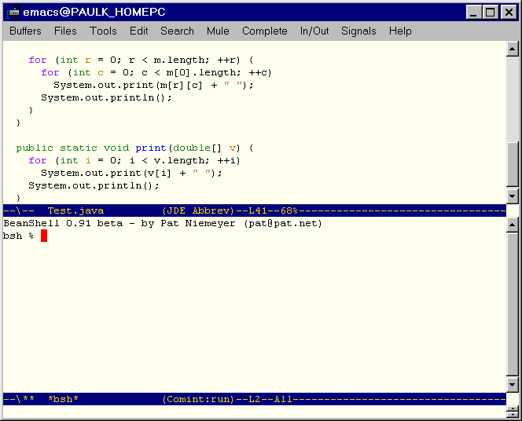

| About the BeanShell | Brief overview of the BeanShell |
| Using the BeanShell | Explains how to start and shut down the BeanShell, enter statements, and show results. |
| The BeanShell Language | Describes the Java constructs and scripting extensions supported by the BeanShell |
| BeanShell Commands | Describes the commands supported by the BeanShell |
The BeanShell can operate as a stand-alone application or as a part of another application. When running as a stand-alone application, the interpreter accepts input from the command line of the shell in which it runs. The BeanShell distribution includes a shell for running the interpreter. It can, however, be run from other shells, such as bash or the DOS command window. The JDE includes a command for running the BeanShell in an Emacs shell (comint) buffer. This enables you to interact with the interpreter directly while developing Java programs.
The JDE also uses the interpreter to implement some JDE commands. The JDE invokes the interpreter via Lisp functions that pass Java statements to the interpreter via the standard input of the interpreter process and retrieve results via the standard output. This guide documents BeanShell functionality that seems relevant to JDE users. See the BeanShell home page home page for additional information and to download the latest version of the BeanShell.

The JDE allows you to run only one instance of the BeanShell at a time. If an instance is already running, the bsh command simply displays the buffer containing the instance, without starting another instance. Note that you can indirectly start a BeanShell instance when you invoke commands implemented as hybrid Lisp/Java scripts, such as jde-wiz-override-method. Such commands start a BeanShell instance if one is not already running.
Statements must conform to Java syntax. For example, simple statements must end in a semicolon. Compound statements, such as if-then constructs, must end in a right brace. Statements may span multiple lines. To continue a statement on a new line, press the Enter key. The BeanShell does not evaluate the statement until you have entered the last line of the statement.
print(2+2);displays
4in the BeanShell window. Note that print(expr) is equivalent to System.out.println(expr) and you can use either method to print a Java expression.
The show(); command toggles automatic display of the results of evaluating statements as they are entered.
exit();at the command prompt.
// Use a hashtable
Hashtable h = new Hashtable();
Date d = new Date();
h.put("today", d);
// Print the current clock value
print( System.currentTimeMillis() );
// Loop
for (int i=0; i<5; i++)
print(i);
// Pop up an AWT frame with a button in it
Button b = new Button("My Button");
Frame f = new Frame("My Frame");
f.add(b, "Center");
f.pack();
f.show();
By default, the BeanShell imports the Java core classes at startup. You
can import additional classes, using standard Java import syntax, for example,
import mypackage.*;or
import mypackage.MyClass;
foo = new Button("Another Button");
creates an untyped script variable named foo and assigns it a
Button object. You are free to subsequently assign foo to
any other type of object.
if ( foobar == void ) // undefinedYou can return a defined variable to the undefined state using the unset() command:
a == void; // true
a=5;
unset("a"); // note the quotes
a == void; // true
int addTwoNumbers( int a, int b ) {
return a + b;
}
defines a BeanShell method called addTwoNumbers that accepts and
returns values of type int. The next example
int a = addTwoNumbers( 5, 7 );uses the newly defined method to add two values of type int.
You define an untyped script method by omitting type specifications. For example, the following statement
add( a, b ) {
return a + b;
}
defines a script method that accepts arguments of any type. When you invoke
an untyped script method, BeanShell interprets the method based on the
types of the arguments that you pass to the method. Consider, for example,
the following invocations of the untyped add method defined in the preceding
example:
foo = add(1, 2);
print( foo ); // 3
foo = add("Oh", " baby");
print( foo ); // Oh baby
The first invocation returns the result of adding, the second, of concatenating
the arguments.
Methods with unspecified return types may return any type of object or no object. A return statement is optional. If omitted, the method returns the value of the last statement or expression in the method body.
foo() {
bar() {
...
}
}
Method may be nested in this way to an arbitrary depth. Within a nested
method, locally declared variables and methods shadow identically
named variables and methods declared in outer methods. Otherwise, variables
and methods are visible to an arbitrary depth of scope. Outer methods can
invoke methods defined by inner methods that return a this object,
for example,
a = 42;
foo() {
a = 97;
print( a );
print( this.a );
print( super.a );
}
foo(); // prints 97, 97, 42
A script method can return its implicit object, thereby allowing the invoking
script to access variables and methods defined by the method, using standard
Java "." notation. For example,
foo() {
int a = 42;
bar() {
print("The bar is open!");
}
bar();
return this;
}
obj = foo(); // prints "the bar is open!"
print ( obj.a ) // 42
obj.bar(); // prints "the bar is open!"
button = new java.awt.Button("foo!");
actionPerformed( event ) {
print( event );
}
button.addActionListener( this );
frame( button ); // show it
defines an Action event handler and registers it with a button.
Remember that you don't have to define all of your event handlers globally. You can handle events in any bsh object scope. For example, the following method creates a button that displays a message when pushed:
messageButton( message ) {
b = new Button("Press Me");
b.addActionListener( this );
frame(b);
actionPerformed( e ) {
print( message );
}
}
messageButton("Hey you!");
messageButton("Another message...");
The above will create two buttons and each will display its own message
when pushed. Each has a separate instance of the event handler object.
Note too that we could return a 'this' reference from the handler method
and use it in other contexts to register listeners...
foo() {
run() {
// do work...
}
return this;}
foo = foo();
new Thread( foo ).start();
These are mainly for internal use by BeanShell commands. Note that there are certain special situations in which the this.interpreter reference may not be available, such as in AWT event handlers.this.interpreter refers to the currently executing BeanShell Interpreter object. this.namespace refers to the BeanShell NameSpace object of the current context. this.variables refers to an array of strings listing the variables defined in this namespace. this.methods refers to an array of strings listing the methods defined in this namespace.
x{name}to access properties of Java beans and Hashtable entries, where x is a bean or Hashtable and name is a String that identifies a bean property or hashtable entry, for example:
b = new java.awt.Button();
b{"label"} = "my button";
// Equivalent to: b.setLabel("my button");
h = new Hashtable();
h{"foo"} = "bar";
// Equivalent to: h.put("foo", "bar");
This is like run() except that it runs the command in its own
thread. Returns the thread object (for stop()ing, join()ing,
etc.)
Displays a class browser. The browser enables you to browse the contents
of any packages packaged as jar files on the classpath defined
by jde-global-classpath.
Print the contents of filename (like Unix cat)
Change working directory for the dir() command (like Unix cd).
Create a console window attached to the current interpreter. Returns
the console Frame.
Display the contets of directory dirname. The format is similar to the
Unix ls -l command.
Toggle on and off debug mode... Note: debug output is verbose and gross.
Create an editor window with an "eval" button. This is primarily useful
for typing multi-line commands and experimenting with methods when running
the BeanShell outside of the Emacs environment. Returns the editor Frame.
Evaluate the string in the current interpreter (see source).
Get the Java Runtime and start the external process, display any output.
Call System.exit(0);
Display the component, centered and packed, in a top level Frame. Returns
the frame. Frame takes additional steps to handle the WindowClosing AWT
event and dispose of the frame, so that you an close the window normally.
The equivalent of calling getResource() on the interpreter class in
the bsh package. Use absolute paths to get stuff in the classpath.
Load a serialized Java object from filename. Returns the object.
Create a File object corresponding to the specified file path name,
taking into account the bsh current working directory (bsh.cwd)
Print the string value of the item. item may be of any type.
Print the bsh working directory. This is the cwd obeyed by all the unix
like bsh comands.
Remove the file (like Unix rm)
run() is like source() except that it runs the command in a new, subordinate
and prune()'d namespace. So it's like "running" a command instead of "sourcing"
it ;)
Save a serializable Java object to filename.
Since the AWT Button class happens to be serializable, we could test drive the save() command.
save(foo, "myButton.ser");If we did save our button, we could revive it later with the load() command.
Create a Server Mode
server attached to the current interpreter, listening on the specified
port.
Change the point size of the font on the specified component, to ptsize.
Toggle on or off the display of the value of expressions evalauted on
the command line. Show mode may be useful if you find yourself typing print()
a lot.
Read filename into the interpreter and evaluate it in the current namespace.
Like Bourne Shell "." command.
"undefine" the variable specified by 'name' (So that it tests == void).